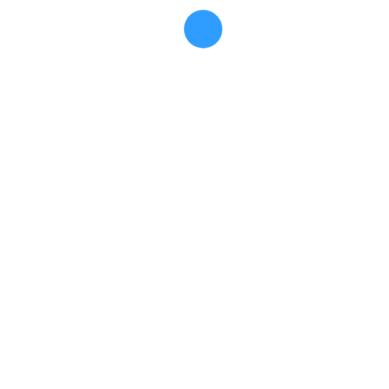

Download Calisti for Linux
All you need to get started with Calisti.

Success!
your file has been downloaded. If not click here
Example extract command:
kubectl config get-contexts

Calisti needs to store your credentials to fetch the container images. Run this command:
kubectl config get-contexts
For detailed installation steps, see the
Quick Start guide. Check
your Kubernetes cluster against the prerequisites listed in the
guide. Note that with the Free Tier you can use a maximum of 2
clusters and 10 Kubernetes worker nodes in total across all of
the clusters. For details, see our
licensing page.
Visit our support page for further questions or support.